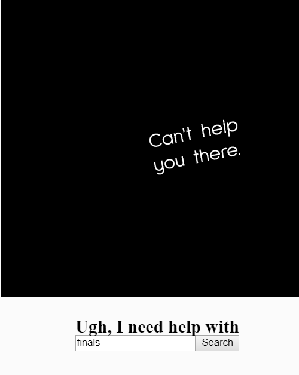

This week's assignment was to do something with data. For me, that means APIs (plus the worksheet dealth with the New York Times API), so I went and googled "interesting APIs".
Turns out what people find "interesting" is variable. There's an API for Chuck Norris facts, which seems a little 2005, and one for country information, which actually seemed cool but none of the information was that great. Then I saw the advice generator API. "This is relatable," I thought. "I could use some advice, just in general."
Another thing I really liked was this spinny text display that's been used throughout the class to pick who's going to present. I wanted a spinny text thing! Turns out, it was super easy. Just boot in WebGL and give it a font file.
I reused what I built for the NYT API search thing to query advice from the advice slip generator, but it turns out there are a lot of things the advice slip doesn't have any advice for -- pretty beat, considering it has one job. So I built in another condition: if the advice section of the call is undefined (meaning it hasn't returned any advice) I had it print out a sad message about its inability to provide advice.
One last thing: sometimes there's more than one snippet of advice for a topic. So, I made sure to pick a random entry in the array, since we wouldn't want the same advice all the time, right?
I really wouldn't be the same without all the wonderful people I've managed to surround myself with over the years, and I'm especially grateful for all the advice they've been willing to give me. Right now is a time in my life I could use some advice, for sure: It's finals and I've barely slept for days. So, this is a sketch for me.
Code can be found here.
Comments? Questions? Concerns? Email me here!